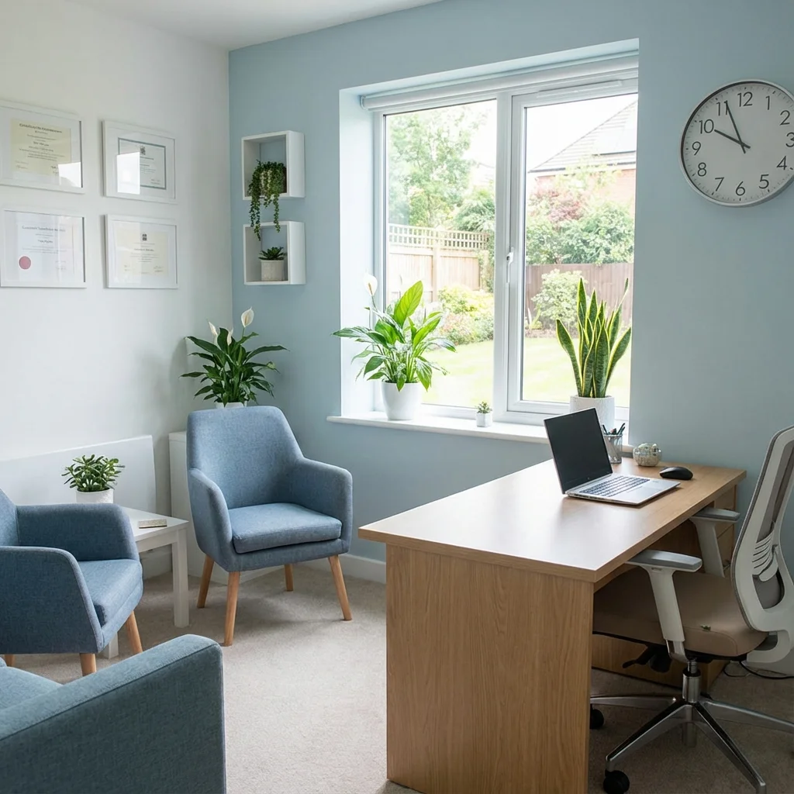
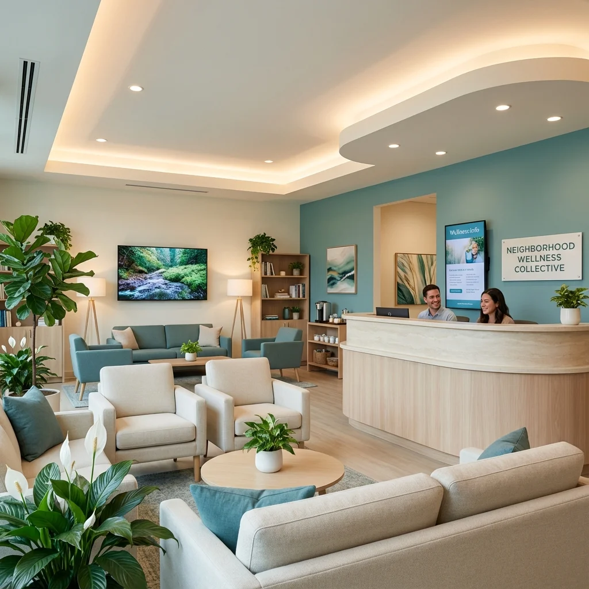

Deteksi Dini Gejala Skizofrenia
Sistem pakar berbasis metode Certainty Factor untuk membantu mendeteksi gejala skizofrenia sejak dini dengan tingkat kepastian yang terukur.
Sistem pakar ini untuk skrining awal dan tidak menggantikan diagnosis medis profesional.
Identifikasi Gejala
Menjawab pertanyaan terkait gejala yang dialami untuk membangun basis pengetahuan diagnosis.
Cepat & Mudah
Proses skrining yang efisien dengan hasil diagnosis dalam hitungan menit.
Hasil Terukur
Tingkat kepastian diagnosis dihitung dengan metode ilmiah yang tervalidasi.

Sistem Pakar Diagnosis Skizofrenia
Skizofrenia adalah gangguan jiwa serius yang memerlukan deteksi dan penanganan dini untuk hasil treatment yang optimal. Sistem pakar kami dirancang untuk membantu mengenali tanda-tanda awal dengan metode ilmiah.
Menggunakan metode Certainty Factor untuk mengukur tingkat kepastian diagnosis berdasarkan gejala yang teridentifikasi, sistem ini memberikan hasil diagnosis yang terukur dan dapat dipertanggungjawabkan secara metodologis.
Certainty Factor
Mengukur tingkat kepastian diagnosis dengan nilai CF antara 0-1 berdasarkan kombinasi gejala yang teridentifikasi.
Basis Pengetahuan
Dibangun dari literatur medis ilmiah dan jurnal peer-reviewed untuk memastikan akurasi diagnosis yang optimal.
Fakta Penting Tentang Skizofrenia
Memahami skizofrenia membantu deteksi dan penanganan lebih dini
#1
Indonesia peringkat 1 penderita skizofrenia di Dunia
16-30
Usia onset paling umum (tahun)
80%
Tingkat perbaikan dengan deteksi dini
1-2
Tahun fase prodromal sebelum onset
Kategori Gejala Skizofrenia
Pahami jenis-jenis gejala yang perlu diwaspadai untuk deteksi dini yang lebih baik
Gejala Positif (Psikotik)
Halusinasi, delusi, dan pemikiran yang tidak teratur. Gejala ini merupakan penambahan fungsi mental yang abnormal.
Pelajari Lebih LanjutGejala Negatif (Defisit)
Kurangnya emosi, motivasi, dan kemampuan berbicara. Gejala ini mencerminkan pengurangan fungsi mental normal.
Pelajari Lebih LanjutGejala Kognitif (Pemikiran)
Kesulitan konsentrasi, gangguan memori, dan masalah dalam mengambil keputusan atau merencanakan aktivitas.
Pelajari Lebih LanjutGejala Disorganisasi
Perilaku yang tidak terorganisir, bicara kacau, dan kesulitan dalam melakukan aktivitas sehari-hari secara terstruktur.
Pelajari Lebih LanjutGejala Afektif (Suasana Hati)
Perubahan suasana hati yang ekstrem, depresi, dan kecemasan yang signifikan dan persisten.
Pelajari Lebih LanjutProdromal (Tanda-tanda Awal)
Gejala awal sebelum onset penuh, seperti perubahan perilaku, penurunan fungsi sosial atau akademik.
Pelajari Lebih Lanjut